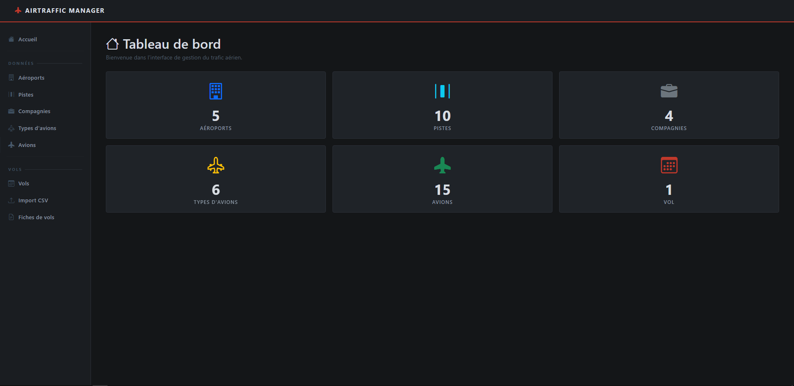
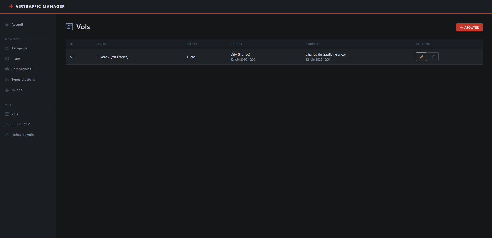
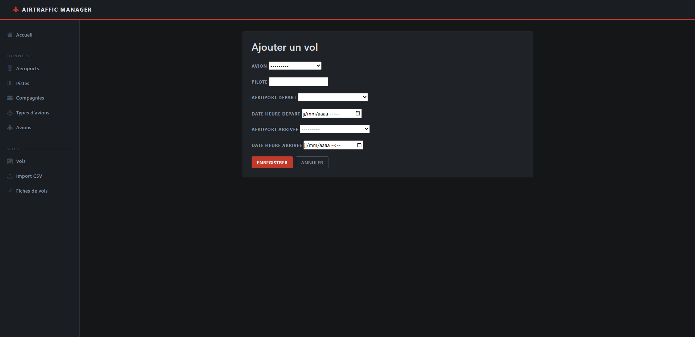
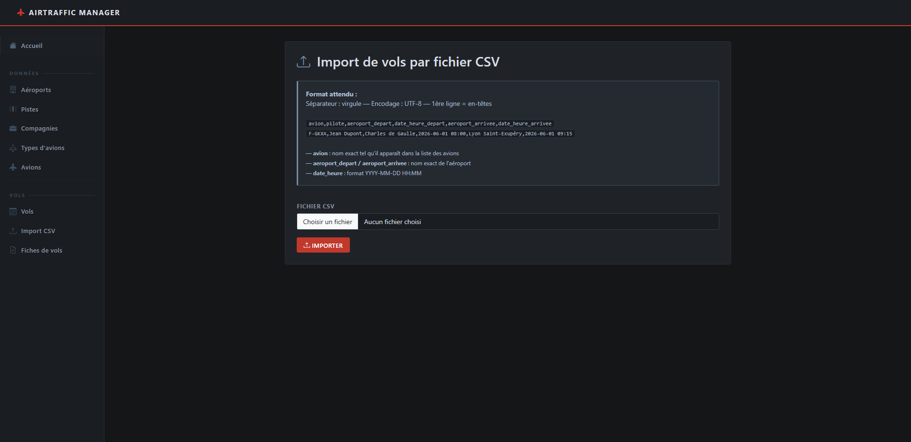
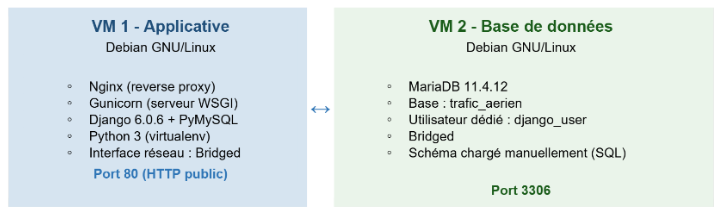
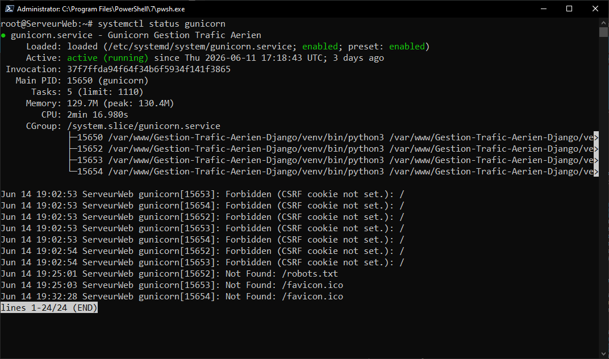

Portfolio d'apprentissage et d'évaluation — 1re année (S1 & S2).
J'y atteste mes trois compétences du référentiel national, preuves à l'appui :
apprentissages critiques, situations professionnelles et composantes essentielles.
Je m'appelle Lucas Carriat, étudiant en première année de
B.U.T. Réseaux & Télécommunications à l'IUT de Colmar (Université de Haute-Alsace).
Je me passionne pour la cybersécurité, l'administration des
infrastructures réseau et le développement d'outils au service de ces infrastructures.
La formation est structurée autour des SAÉ (Situations d'Apprentissage
et d'Évaluation), qui placent l'apprentissage en contexte professionnel. Mon objectif
à terme est de m'orienter vers le métier d'analyste SOC : surveiller,
détecter et répondre aux incidents de sécurité. Je m'y prépare déjà via des
plateformes d'entraînement (TryHackMe, HackTheBox, Root-Me, LetDefend) et un
homelab de supervision auto-hébergé.
Systèmes d'Information et Numérique. Bases de la programmation et des réseaux (Cisco Packet Tracer).
2022 — présent
Production musicale (freelance)
Beatstars — en pause
Gestion d'un catalogue en ligne, collaboration en studio. Compétences en gestion de projet et travail collaboratif.
2021
Stage maintenance — Laboratoires Servier
Suresnes
Observation en maintenance industrielle : entretien préventif et normes de sécurité.
Référentiel national B.U.T. R&T
Les trois compétences
Chaque compétence est attestée par ses apprentissages critiques (AC),
sa situation professionnelle et ses composantes essentielles (CE),
avec une preuve issue d'un projet pour chaque acquis.
UE1
Administrer les réseaux et l'Internet
Situation professionnelle : assister l'administrateur du réseau
6 acquis0 en cours0 à améliorer
Composantes essentielles
CE1.01En choisissant les solutions et technologies réseaux adaptées. Choix Cisco / EVE-NG / GNS3, topologies VLAN et routage (SAÉ 1.02, 2.01).
CE1.02En respectant les principes fondamentaux de la sécurité informatique. Segmentation VLAN, port-security, ACL, SSH durci (SAÉ 2.01, VPS, SOC).
CE1.03En utilisant une approche rigoureuse pour la résolution des dysfonctionnements. Diagnostic en couches du 502, dépannage ACL/NAT (SAÉ 2.03, 2.01).
CE1.04En respectant les règles métiers. Respect des plans d'adressage et des consignes du sujet (SAÉ 1.02, 2.01).
Situation professionnelle : découvrir les transmissions
5 acquis0 en cours0 à améliorer
Composantes essentielles
CE2.01En communiquant avec le client et les différents acteurs impliqués, parfois en anglais. Oral SAÉ 1.03 devant jury ; résumés techniques en anglais (SAÉ 2.03).
CE2.02En faisant preuve d'une démarche scientifique. Protocole de mesure Wi-Fi et PoE, heatmaps, analyse d'atténuation (SAÉ 1.03).
CE2.03En choisissant les solutions et technologies adaptées. Choix Cat 7 / TIA-568B, point d'accès Cisco, codec VS1053 (SAÉ 1.03, 2.02).
CE2.04En proposant des solutions respectueuses de l'environnement. Concours DYLO (micro-hydrolienne) ; boîtier bois et batterie réutilisable (SAÉ 2.02).
Apprentissages critiques
AC12.01Acquis
Mesurer, analyser et commenter des signaux.
SAÉ 1.03 : mesures Wi-Fi (RSSI, atténuation par matériau) avec Acrylic Wi-Fi et analyse PoE (54 V / 13 W / 0,24 A), commentées dans le rapport. → CE2.02
AC12.02Acquis
Caractériser des systèmes de transmissions élémentaires et comprendre leur modélisation mathématique.
Caractérisation de systèmes de transmission élémentaires (modulation, théorème de Shannon, bande passante) étudiée et modélisée en R1.06 / R2.06. → CE2.02
AC12.03Acquis
Déployer des supports de transmission.
SAÉ 1.03 : sertissage Cat 7 (norme TIA-568B), montage de noyaux keystone, installation d'un point d'accès Cisco AIR-AP1231G. → CE2.03
AC12.04Acquis
Connecter les systèmes de ToIP.
Mise en œuvre des systèmes de ToIP en R2.07 : configuration et raccordement de postes de téléphonie sur IP. → CE2.03
AC12.05Acquis
Communiquer avec un tiers et adapter son discours et sa langue.
Oral SAÉ 1.03 devant jury : présentation des heatmaps et des mesures à un public mixte (technique et non technique), argumentation des choix méthodologiques. → CE2.01
Situation professionnelle : s'intégrer dans un service informatique
6 acquis0 en cours0 à améliorer
Composantes essentielles
CE3.01En étant à l'écoute des besoins du client. Prise en compte de la logique métier imposée (règle des 10 min) et des corrections du professeur (SAÉ 2.03).
CE3.02En documentant le travail réalisé. DEPLOIEMENT.md reproductible, mode d'emploi CSV intégré, README GitHub (SAÉ 2.03, VPS).
CE3.03En utilisant les outils numériques à bon escient. Nginx/Gunicorn/systemd, Docker, Git, ClickUp (SAÉ 2.03, VPS, SOC).
CE3.04En choisissant les outils de développement adaptés. Django + MariaDB, architecture 2 VM séparées, PySide6 (SAÉ 2.03, 1.05).
CE3.05En intégrant les problématiques de sécurité. ALLOWED_HOSTS, séparation app/BDD, import CSV robuste, IDS Suricata (SAÉ 2.03, SOC).
Lire, exécuter, corriger et modifier un programme.
SAÉ 2.03 : lecture, exécution et débogage autonome de code Django (ModuleNotFoundError pymysql → venv, conflit Git dans settings.py). → CE3.04
AC13.03Acquis
Traduire un algorithme dans un langage et pour un environnement donné.
SAÉ 1.05 (Python / PowerShell) et SAÉ 2.02 : traduction d'algorithmes en code — courbe logarithmique de volume f(x)=50+√(x/100)×50 et égaliseur 5 bandes en C++ Arduino. → CE3.04
AC13.04Acquis
Connaître l'architecture et les technologies d'un site Web.
Pour chaque SAÉ : le contexte, mes tâches réalisées personnellement, les preuves
d'acquisition des compétences (composantes essentielles) et un résumé en anglais.
UE3 · DevInfraSAÉ 2.03 · S2Preuve principaleEn cours
Gestion du Trafic Aérien — Django & MariaDB
Application web de gestion du trafic aérien (CRUD de 6 entités, logique métier, import CSV, fiches imprimables) déployée « comme en production » sur deux VM Debian (Nginx + Gunicorn + systemd).
En équipe de trois, nous devions développer une application web de gestion du trafic aérien : un gestionnaire administre des aéroports, des pistes, des compagnies, des types d'avions, des avions et des vols, avec un CRUD complet pour chaque entité. Le sujet imposait une logique métier (vérifier qu'une piste compatible est libre à l'arrivée — occupation de 10 minutes par avion, avec suggestion d'un créneau sinon), un import de vols par CSV et la génération de fiches de vols imprimables. L'application devait être déployée en production sur machine virtuelle avec Nginx et Gunicorn — le cœur de la compétence UE3.
Membre
Périmètre
Moi (Lucas)
Infrastructure VM, déploiement Nginx/Gunicorn/systemd, front-end (templates, CSS, tableau de bord), import CSV, fiches de vols, documentation technique.
Adil
Back-end Django : modèles, formulaires, vues CRUD et logique des 10 minutes (suggestion de créneau).
Adel
Schéma SQL (schema.sql), création et alimentation de la base (donnees.sql), tests de robustesse.
Deux VM Debian sous VirtualBox : une VM « BDD » (MariaDB seule) et une VM « Django » (Nginx + Gunicorn + application).
Passage en mode pont : chaque VM reçoit une IP du réseau de la salle via DHCP, rendant le site joignable depuis n'importe quel poste.
MariaDB configurée pour les connexions distantes (bind-address = 0.0.0.0, utilisateur django_user@'%').
2.2 Déploiement Nginx + Gunicorn + systemd
Gunicorn (WSGI) en remplacement du runserver de développement, Nginx en reverse proxy.
Blocs /static/ et /media/ dans Nginx, collectstatic côté Django (STATIC_ROOT).
Service systemd avec systemctl enable pour un redémarrage automatique après reboot.
Rédaction de DEPLOIEMENT.md — procédure complète et reproductible de A à Z.
2.3 Front-end & expérience utilisateur
Gabarit commun base.html (navigation + barre latérale) hérité par toutes les pages.
Pages de liste des 6 entités, formulaire générique réutilisé pour tous les CRUD, page de confirmation de suppression.
Tableau de bord à compteurs dynamiques interrogeant la base en temps réel.
CSS séparé (thème sombre à barre latérale), indépendant de Bootstrap.
2.4 Import CSV & fiches de vols
Module import_vols_csv : lecture UTF-8, correspondance par nom, collecte d'erreurs ligne par ligne sans interrompre l'import, mode d'emploi en préambule.
Page fiche_vols : filtrage par aéroport, date et sens (départs/arrivées) + feuille @media print pour une impression propre.
2.5 Gestion de version & coordination
Tenue du dépôt GitHub, résolution des conflits de fusion (notamment dans settings.py), synchronisation du code sur les VM.
Planification via diagramme de Gantt (ClickUp) et intégration des corrections du professeur (base SQL manuelle plutôt que migrations Django).
3. Preuves d'acquisition des compétences — composantes essentielles (UE3)
CE
Preuve concrète
CE3.01 — écoute des besoins
Prise en compte de la logique métier imposée (règle des 10 min) et intégration des corrections du professeur.
CE3.02 — documenter
Rédaction de DEPLOIEMENT.md, mode d'emploi CSV intégré en page, procédure reproductible de A à Z.
CE3.03 — outils numériques à bon escient
Chaîne Nginx + Gunicorn + service systemd, conforme aux pratiques de production.
CE3.04 — outils de développement adaptés
Django + MariaDB (PyMySQL) et architecture à deux VM séparées (application / base).
CE3.05 — sécurité
Import CSV tolérant aux erreurs, gestion de ALLOWED_HOSTS, séparation application / base sur deux VM.
Analyse réflexive — difficultés & résolution
Le déploiement a été la partie la plus formatrice : les problèmes ne venaient pas du code applicatif mais de l'environnement. J'ai appris à diagnostiquer en couches plutôt qu'à essayer au hasard.
Problème
Diagnostic
Solution
502 Bad Gateway
Gunicorn injoignable par Nginx.
Diagnostic couche par couche : ss -tlnp → curl 127.0.0.1:8000 → logs Nginx.
ModuleNotFoundError: pymysql
Gunicorn lancé hors du virtualenv.
Toujours activer le venv avant de démarrer Gunicorn.
Conflit dans settings.py
Marqueurs de conflit Git non résolus cassant le parse Python.
Résolution manuelle (ALLOWED_HOSTS, HOST de la base).
Gunicorn ne survit pas au reboot
Unité systemd non enregistrée.
systemctl enable gunicorn avec chemin absolu.
Ce que je retiens : un service web ne se résume pas à son code. Sa valeur tient aussi à sa capacité à être déployé, reproduit et maintenu — d'où l'importance de la documentation et d'une méthode de diagnostic ordonnée.
4. English summary
As part of SAÉ 2.03, our team of three built an air-traffic management web application using Django and MariaDB. The app provides full CRUD operations for six entities (airports, runways, airlines, aircraft types, aircraft and flights), enforces a runway-availability business rule (a runway stays busy for ten minutes after a landing, otherwise a later slot is suggested), supports bulk flight imports via CSV, and generates printable flight sheets.
My personal scope covered infrastructure setup (two Debian VMs in bridged networking — one for MariaDB, one for the Django app behind Gunicorn and Nginx), a systemd service for automatic restarts, the front-end (shared template, sidebar layout, dynamic dashboard), the CSV import module and the deployment documentation. The most valuable learning came from deployment troubleshooting: diagnosing a 502 error layer by layer taught me that a web service is more than its code — reproducibility, documentation and a structured diagnostic approach are equally critical skills.
Captures d'écran

Tableau de bord — compteurs dynamiques (base interrogée en temps réel)

Liste des vols — CRUD (ajout / édition / suppression)

Formulaire générique réutilisé — ajout d'un vol

Import CSV — mode d'emploi du format intégré en préambule

Architecture 2 VM — applicative (Nginx/Gunicorn) + base MariaDB

systemctl status gunicorn — service actif & enabled
UE1 · RéseauxSAÉ 1.02 · S1
Architecture Réseau Succursale — EVE-NG
Conception et déploiement sous EVE-NG d'un réseau d'entreprise complet (Cisco) : segmentation VLAN, routage inter-VLAN, DHCP relayé et VTP.
Simulation sous EVE-NG (équipements Cisco 2960 + 2800) d'une succursale d'entreprise connectée à un siège (sujet R1.02).
Mes tâches
Segmentation : 4 VLANs (Directeurs, Utilisateurs, Serveurs, Administration) isolés par politique de sécurité.
Inter-VLAN : Router-on-a-Stick (sous-interfaces 802.1Q sur le routeur).
Services : DHCP déployé sur le commutateur puis migré sur serveur Linux avec relai ip helper-address ; VTP serveur/client entre les deux commutateurs ; spanning-tree contre les boucles.
Dépannage : validation par ping / traceroute, vérification de l'attribution DHCP côté postes VPC.
Preuves — composantes essentielles (UE1)
CE1.01 — choix d'une topologie Cisco et d'un adressage adaptés.
CE1.02 — segmentation VLAN comme mesure de sécurité.
CE1.03 — diagnostic rigoureux par ping/traceroute.
English summary
Using EVE-NG, I deployed a complete corporate branch network on Cisco devices: four security-segmented VLANs, inter-VLAN routing (router-on-a-stick), DHCP first on the switch then relayed to a Linux server via ip helper-address, and VTP between switches. I validated connectivity layer by layer with ping and traceroute.
Topologie logique EVE-NG — routeurs & switchs CiscoPreuve DHCP — attribution dynamique vers les postes VPC
UE1 · RéseauxSAÉ 2.01 · S2
Réseau Multi-Services Avancé — GNS3
Architecture réseau avancée sous GNS3 : routage dynamique RIPv2, load-balancing spanning-tree, services FTP/Apache, port-security et ACL.
Services : DHCP par VLAN, FTP (anonyme + utilisateurs nommés), Apache dev+prod déployé par rsync.
Sécurité : port-security (violation en shutdown), ACL sur R2 (HTTP/22/873), ACL de bordure (ICMP/HTTP).
Preuves — composantes essentielles (UE1)
CE1.01 — choix des protocoles (RIPv2, 802.1Q) et services adaptés.
CE1.02 — port-security et ACL comme défense en profondeur.
CE1.03 — isolation de VLANs, dépannage ACL/NAT méthodique.
English summary
On GNS3 I built an advanced multi-service network: tagged VLANs (100/200/300 + native 999), L3 inter-VLAN routing, spanning-tree load-balancing over three trunks, RIPv2 dynamic routing, and enterprise services (DHCP, FTP, Apache with rsync deployment). Security relied on port-security and layered ACLs on R2 and the border router.
UE2 · TransmissionsSAÉ 1.03 · S1
Câblage Structuré & Audit Wi-Fi
Audit Wi-Fi terrain (heatmaps Acrylic, 2,4 / 5 GHz), câblage structuré Cat 7 (TIA-568B), mesures PoE et simulation Packet Tracer de l'infrastructure de l'IUT.
Déploiement physique et audit de couverture d'un réseau, avec restitution orale devant jury.
Mes tâches
Câblage : sertissage de câbles Cat 7 (norme TIA-568B), montage de noyaux femelles keystone.
Mesures PoE : Cisco Catalyst WS-C2960 — 54 V, 13 W, 0,24 A ; configuration du point d'accès Cisco AIR-AP1231G.
Audit Wi-Fi : heatmaps 2,4 / 5 GHz (Acrylic Wi-Fi), mesures d'atténuation (Placo vs béton armé), analyse co-canal et zones blanches.
Simulation : reconstitution de l'infrastructure IUT sous Packet Tracer (accès au site uha1.fr).
Preuves — composantes essentielles (UE2)
CE2.02 — démarche scientifique : protocole de mesure et commentaire des résultats.
CE2.03 — choix du Cat 7 et du matériel d'AP adaptés.
CE2.01 — restitution orale devant un public mixte.
English summary
This project combined structured cabling and a Wi-Fi survey. I crimped Cat 7 cables (TIA-568B), mounted keystone jacks, measured PoE on a Cisco Catalyst 2960 (54 V / 13 W / 0.24 A) and produced 2.4/5 GHz heatmaps with Acrylic Wi-Fi to analyse material attenuation and dead zones. I presented the methodology and results orally to a mixed technical/non-technical jury.
Simulation de l'infrastructure réseau de l'IUTAccès réussi au site uha1.fr via Packet Tracer
Contrôle complet via MQTT (pub/sub) ; affichage OLED (station, IP, état, volume).
Application Flutter Android : catalogue 35 000 stations, provider MQTT temps réel, favoris persistés (shared_preferences), thème Material 3.
Preuves — composantes essentielles (UE2)
CE2.02 — démarche scientifique : correction perceptive du volume, réglage de l'égaliseur.
CE2.03 — choix d'un codec matériel et d'une liaison MQTT adaptés.
CE2.04 — boîtier bois et batterie réutilisable (sobriété matérielle).
English summary
MURA is a self-contained internet radio built on an ESP32 (HUZZAH32) with a VS1053 hardware codec. It streams over Wi-Fi from 35,000+ stations, decodes MP3/AAC, shows status on an OLED display and is fully controllable over MQTT, including a 5-band equaliser and a logarithmic volume curve. A companion Flutter Android app provides real-time control and persisted favourites.
Radio terminée — boîtier bois, OLED, haut-parleurs LS110HUZZAH32 + OLED SSD1306 (I²C)Démarrage — connexion Wi-Fi en coursWi-Fi connecté — IP 192.168.1.78Lecture en cours — station, volume & EQ affichésApp Flutter Android — contrôle MQTT en temps réel
UE3 · DevSAÉ 1.05 · S1
Automation & Scripting — Analyse de disque
Outil hybride PowerShell / Python (PySide6) d'analyse et de nettoyage de disque avec interface graphique sécurisée.
AC13.01 · AC13.02 · AC13.03 — CE3.03 · CE3.04
Voir le détail de la SAÉ
Contexte & tâches
Orchestrateur (sae.ps1) : PowerShell — préparation de l'environnement, vérification des dépendances, sécurisation des chemins UNC (New-PSDrive).
Moteur (analyse.py) : parcours récursif os.walk, tri par taille, export JSON.
CE3.04 — choix d'outils adaptés (PowerShell pour l'orchestration, Python/PySide6 pour l'IHM).
CE3.03 — usage raisonné des outils numériques (export JSON intermédiaire).
English summary
A hybrid PowerShell/Python disk-analysis tool: a PowerShell orchestrator prepares the environment and secures UNC paths, a Python engine walks the filesystem and exports JSON, and a PySide6 GUI shows an interactive pie chart with safe deletion.
Structure modulaire du projetInterface graphique — répartition de l'espace disque
UE1 · UE3 · Cyber
Projet SOC — Suricata & Docker
Service WordPress conteneurisé (Docker) supervisé par l'IDS Suricata : détection d'intrusion, règles personnalisées et analyse d'alertes (approche Blue Team).
WordPress conteneurisé avec Docker, exposé sur le réseau local.
Règles Suricata personnalisées (détection d'intrusion, scan de ports).
Analyse des alertes eve.json et catégorisation des menaces (corrélation d'événements).
Preuves — composantes essentielles
CE1.02 / CE3.05 — détection d'intrusion et durcissement.
CE1.05 — veille : règles à jour, posture Blue Team.
English summary
A containerised WordPress service monitored by the Suricata IDS, with custom detection rules and analysis of eve.json alerts — a hands-on introduction to SOC/Blue-Team event correlation.
UE1 · UE3 · InfraEn production
Homelab Cyber — VPS Debian, Nginx & Supervision
VPS Debian (DigitalOcean) durci : Nginx, Docker, supervision (Zabbix puis Grafana), pare-feu UFW et SSH renforcé. Évolué depuis en SIEM distribué (Wazuh) — documentation à jour sur GitHub.
Cette page présente un aperçu — la stack a évolué depuis les captures ci-dessous. La configuration actuelle (Wazuh, CrowdSec, WireGuard, Caddy, Grafana) est documentée sur GitHub → projet-cyber-homelab.
Contexte & tâches
Provisionnement d'un VPS Debian 12 (DigitalOcean FRA1), Nginx en reverse proxy, Docker.
Supervision Zabbix 7.4 + PostgreSQL (puis migration vers Prometheus/Grafana).
Durcissement : UFW, SSH par clé uniquement (port non standard, mots de passe désactivés).
Évolution en architecture distribuée : SIEM Wazuh sur VM locale relié au VPS par tunnel WireGuard, IDS comportemental CrowdSec.
Preuves — composantes essentielles
CE1.02 / CE3.05 — durcissement Linux, défense en profondeur.
CE1.05 — veille active (évolution de la stack de supervision).
CE3.02 — documentation reproductible sur GitHub.
English summary
A hardened Debian VPS (DigitalOcean) running Nginx, Docker and monitoring (Zabbix, later Grafana), secured with UFW and key-only SSH. It has since grown into a distributed SOC homelab: a local Wazuh SIEM linked to the VPS over a WireGuard tunnel, with CrowdSec behavioural detection. Full, up-to-date documentation lives on GitHub.
Droplet Debian — FRA1systemctl status nginxSupervision Zabbix (depuis remplacée par Grafana)
Cyber12ᵉ place
RhineTech CTF physique 2025
Challenge de cybersécurité physique à Mulhouse — crochetage, énigmes logiques et intrusion numérique en temps limité. 12ᵉ place au classement général.
Voir le détail
Crochetage et bypass de mécanismes physiques.
Résolution d'énigmes de logique sous pression temporelle.
Intrusion numérique en temps limité.
12ᵉ place au classement général.
Plateformes d'entraînement actives
TryHackMeHackTheBoxRoot-MeLetDefend
UE2 · Dev
Concours OSI — Projet DYLO
Micro-hydrolienne (vis d'Archimède) avec monitoring Arduino, présentée devant le jury INSA dans le cadre du concours OSI.
AC11.01 · AC13.03 — CE2.04
Voir le détail
Conception d'une micro-hydrolienne pour réduire la facture énergétique du village de Monthou-sur-Cher, en respectant la faune et la flore.
Mon rôle — Électronique
Intégration moteur et calculs de rendement énergétique.
Programmation Arduino : capteurs tension/courant, affichage LCD, monitoring temps réel.
Vue d'ensemble
Synthèse des compétences
Niveau atteint et preuves clés pour chacune des trois compétences.
UE1 Administrer les réseaux et l'Internet
UE2 Connecter les entreprises et les usagers
UE3 Créer des outils et applications
Situation professionnelle
Assister l'administrateur du réseau
Découvrir les transmissions
S'intégrer dans un service informatique
AC acquis
6 / 6
5 / 5
6 / 6
Niveau atteint
Très bon
Très bon
Très bon
Preuves clés
SAÉ 1.02, SAÉ 2.01, Projet SOC, Homelab VPS
SAÉ 1.03, SAÉ 2.02, Concours DYLO
SAÉ 2.03, SAÉ 1.05, Homelab VPS
Relevé de notes — Semestre 2
Moyenne générale : 13,41 / 20
— moyenne de la promotion : 09,39 · meilleure moyenne : 13,52.
≥ 10 / 20 dans chaque UE
UE
Compétence
Moyenne /20
UE1
Administrer les réseaux et l'Internet
14,96
UE2
Connecter les entreprises et les usagers
11,34
UE3
Créer des outils et applications pour les R&T
13,41
Moyenne générale — Semestre 2
13,41
Résultats marquants : R2.03 Bases des services réseaux 20/20 ·
R2.04 Téléphonie d'entreprise 18/20 ·
SAÉ 2.05 Portfolio 16,50/20 ·
R2.01 Technologie de l'Internet 15,98/20 ·
R2.10 Anglais technique 15,11/20.
Contact
Me contacter
Une question, un projet ou une opportunité ? N'hésitez pas.